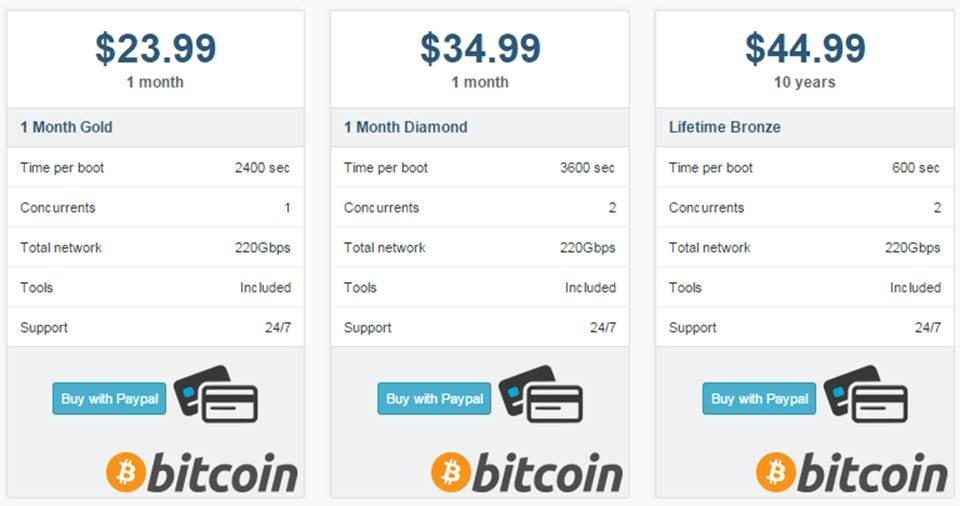

Botnet DDoS Attacks
What is a botnet?
Occasionally referred to as a “zombie army,” a botnet is a group of hijacked Internet-connected devices, each injected with malware used to control it from a remote location without the knowledge of the device’s rightful owner. From the point of view of hackers, these botnet devices are computing resources that can be used for any type of malicious purposes—most commonly for spam or DDoS attacks
An individual botnet device can be simultaneously compromised by several perpetrators, each using it for a different type of attack and often at the same time. For instance, a malware-infected personal computer could be ordered to rapidly access a website as part of a larger DDoS attack. At the same time it could also be performing vulnerability scans, with its owner browsing the web—unaware of both occurrences.
“We have a Botnet army ready to take down your site. You have 48 hours to pay us 1200$. Merry Xmas!”
What is a DDoS attack?
DDoS is an acronym for distributed denial of service. A DDoS attack is a malicious attempt to make a server or a network resource unavailable to users. It is achieved by saturating a service, which results in its temporary suspension or interruption.
A Denial of Service (DoS) attack involves a single machine used to either target a software vulnerability or flood a targeted resource with packets, requests or queries. A DDoS attack, however, uses multiple connected devices—often executed by botnets or, on occasion, by individuals who have coordinated their activity.
DDoS attacks can be divided into two general categories:
-
Application layer DDoS attack types include HTTP floods, slow attacks (Slowloris, RUDY), zero-day assaults, and those targeting vulnerabilities in operation systems, web applications and communication protocols.
Comprised of seemingly legitimate and innocent requests, their magnitude usually being measured in requests per second (RPS), the goal of the attacks is to overwhelm a target application with requests. This causes high CPU and memory usage that eventually hangs or crashes the application.
-
Network layer DDoS attack types include UDP floods, SYN floods, NTP amplification, DNS amplification, SSDP amplification, IP fragmentation and more.
These are high-capacity barrages, measured in gigabits per second (Gbps) or packets per second (PPS). They’re almost always executed by botnets, with a goal of consuming the target’s upstream bandwidth, resulting in network saturation.
It should be noted that DDoS attacks can also target supporting infrastructures and services—most commonly the target’s DNS servers. These can be over-encumbered with a flood of fabricated DNS requests, originating from botnet devices.
DDoS botnet and botnet tools
The originator of a botnet is commonly referred to as a “bot herder,” or “botmaster.” This individual controls the botnet remotely, often through intermediate machines known as the command and control (C&C, or C2) servers.
To communicate with a C&C server, the botmaster uses various hidden channels, including seemingly innocuous protocols like IRC and HTTP websites, as well as popular services like Twitter, Facebook and even Reddit
Botnet servers are able to communicate and cooperate with other botnet servers, effectively creating a P2P network controlled by a single or multiple botmasters. This means that any given botnet DDoS attack may have multiple origins, or be controlled by multiple individuals—sometimes working in a coordinated manner, other times operating independently.
Botnets-for-hire are available from various sources, their services often being auctioned and traded among attackers. Online marketplaces have even sprung up—these are commercial entities trading in huge numbers of malware-infected PCs. They can be rented and used for DDoS or other attacks (e.g., brute force).
 Typical DDoS stresser price list
These platforms, often hiding behind the ambiguous service definition of stressers, or booters, sell DDoS-as-a-service. They provide their clients with a richly-featured toolkit, as well as a distribution network, so as to execute their attacks on call.
Now armed with a rented botnet, DDoS attacks have become a viable (if criminal) and cost-effective option for anyone looking to take out a website or disturb communication of home and office networks. This results in a number of attack scenarios, ranging from shady businesses using DDoS to gain a competitive advantage to assaults in which DDoS becomes a tool of vandalism, revenge or simply a way to get some attention.
Full-service DDoS attacks are available for as little as $5 per hour, and the interested party can easily stretch their hour with a monthly plan that averages $38. Within the cybercrime ecosystem, botnet DDoS attacks are a mainstream commodity; prices continually drop, while efficacy and sophistication is constantly on the rise.